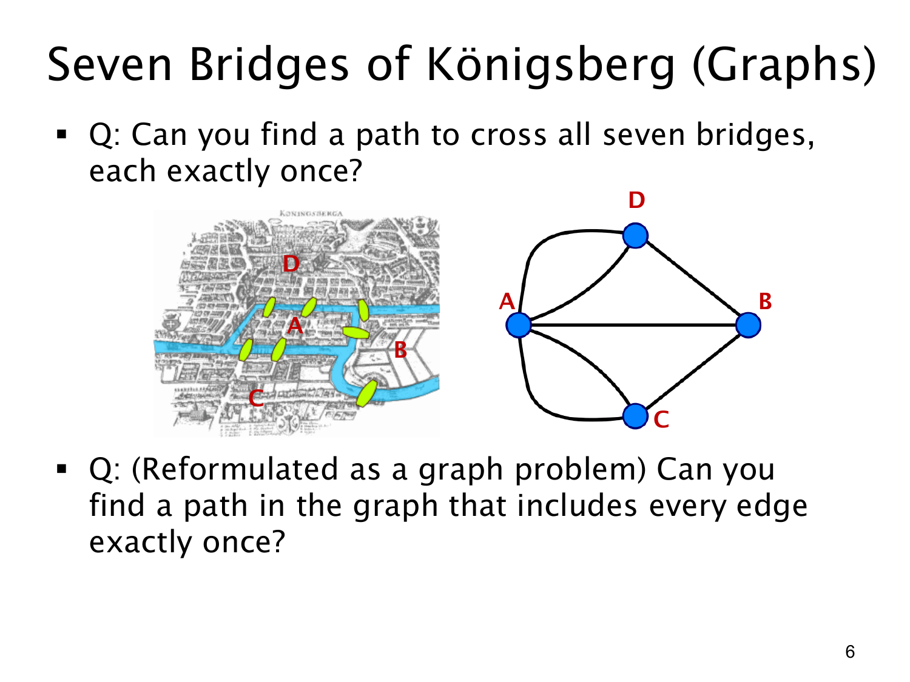

L1.1 · 第 6 页讲解原文
查看这一页课件

柯尼斯堡七桥：把地图变成图
原问题是：能否走一条路线，把七座桥每座恰好走一次？图左侧是河流、陆地和桥的地图；右侧把四块陆地简化成顶点 A,B,C,D，把每座桥简化成连接相应陆地的边。同两块陆地之间有两座桥时，就画两条边。这种抽象保留了“从哪里可以走到哪里”，省去了街道形状等无关细节。
问题于是变为：图中是否存在一条经过每条边恰好一次的路径？这种路径称为欧拉通路（Euler trail）。判断它能否存在，可以数每个顶点连接了多少条边，即顶点的度数（degree）。
为什么度数重要？除起点和终点外，每次从一座桥进入一块陆地，都必须再从另一座尚未使用的桥离开；进入和离开的桥要成对。因此，若一条路径用完所有边，奇数度顶点至多只能有两个，分别充当起点和终点。如果起点等于终点，则所有顶点的度数都应为偶数。
这幅图中，A 的度数为 5，B,C,D 的度数各为 3；四个顶点全是奇数度。它们不可能只由一条通路的两个端点解释，所以答案是不能。这页的重点是把现实路线问题转成图问题，再用一个简单的奇偶性条件排除所有可能路线，而不必逐条尝试。